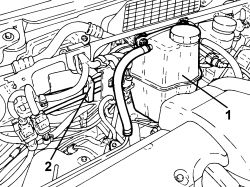
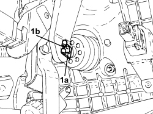
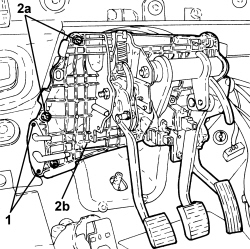

3330B08 PEDAL MOUNT ASSEMBLY - R R AND OVERHAUL WITH FACIA TRIM SUPPORT BEAM REMOVED FOR RIGHT-HAND DRIVE VERSIONS
- Path
- Procedures > 33 BRAKES > 3330 HYDRAULIC BRAKE SYSTEM > 3330B PEDAL UNIT > 3330B08 PEDAL MOUNT ASSEMBLY - R R AND OVERHAUL WITH FACIA TRIM SUPPORT BEAM REMOVED FOR RIGHT-HAND DRIVE VERSIONS
- Kind
- repair procedure (removal / refitting; the operation number is the code)
- Applies to
- engines: 1.9 JTS, 2.2 JTS; all production periods
- Interactive page
- https://sloeber94.github.io/elrnDB/alfa/159/en/#/939005776
Applies to: engines: 1.9 JTS, 2.2 JTS; all production periods
 Removing
Removing
 Refitting
RefittingOp. 1820B21 MASTER CYLINDER (PUMP) - R R FOR RIGHT HAND DRIVE VERSIONS
1. Unscrew the engine coolant reservoir fixing nuts and move it aside.
2. Open the clutch system pipe retaining clips.

Applies to: engines: 1.9 JTS, 2.2 JTS; all production periods
- Disconnect the electrical connection for the accelerator pedal.
Description | Connector | |
|---|---|---|
- | Accelerator pedal potentiometer |
- Disconnect the electrical connection for the brake pedal.
Description | Connector | |
|---|---|---|
- | Brake pedal switch |
- Disconnect the electrical connection for the clutch pedal.
Description | Connector | |
|---|---|---|
- | Clutch pedal switch |
1. Remove the retaining clip (1a) and move back pin (1b) connecting the brake pedal to the brake servo.

Applies to: engines: 1.9 JTS, 2.2 JTS; all production periods
1. Using a suitable tool (drill) remove the rivets securing the clutch pipe connector flange to the pedal assembly.
- Disconnect the bonnet opening cable from the lever.
2. Undo the fixing nuts and remove the pedal assembly mounting.

Applies to: engines: 1.9 JTS, 2.2 JTS; all production periods
Refitting
Removing- Place the pedal assembly mounting in position and secure it tightening the nuts to the recommended torque.
Component | Fastening | dia | Value (daNm) | Validity |
|---|---|---|---|---|
Pedal assembly | Nut | M8 | (bodyshell side) 2.2 - 2.6 |
- Connect the bonnet opening cable to the lever.
- Fasten the clutch pipe connector flange to the pedal mounting support using new rivets.
- Connect the brake pedal to the brake servo using the pin and the retaining clip.
- Connect the electrical connection for the clutch pedal.
- Connect the electrical connection for the brake pedal.
- Connect the electrical connection for the accelerator pedal.
- Place the engine coolant supply reservoir back in its housing and secure it using the nuts.
- Close the clutch system pipe retaining clips.
Op. 1820B21 MASTER CYLINDER (PUMP) - R R FOR RIGHT HAND DRIVE VERSIONS
Op. 0010T64 BRAKE AND/OR CLUTCH FLUID CHECK LEVEL AND TOP UP AS NECESSARY
Topics linked from this page (7)
- 0010T64 BRAKE AND/OR CLUTCH FLUID CHECK LEVEL AND TOP UP AS NECESSARY
- 0010T65 HYDRAULIC BRAKE SYSTEM - BLEED AIR
- 1820B21 MASTER CYLINDER (PUMP) - R R FOR RIGHT HAND DRIVE VERSIONS
- 4110A29 MOUNT WITH STEERING SHAFTS - R R - INCLUDES STEERING WHEEL R R - FOR RIGHT-HAND SIDE VERSIONS
- I030 BRAKE PEDAL SWITCH
- I031 CLUTCH PEDAL SWITCH
- K055 ACCELERATOR PEDAL POTENTIOMETER